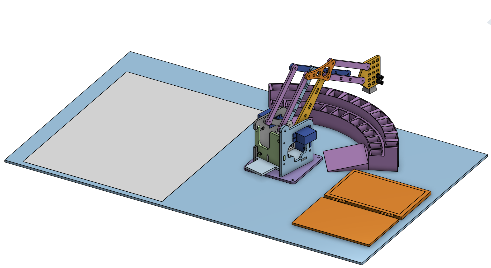
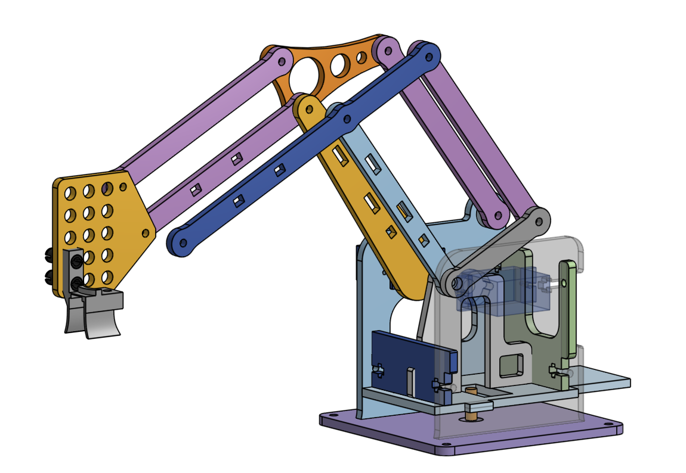

← Back to projects
Robotics · Embedded Systems
Wireless Robotic Arm
Built and programmed a 3-DOF robotic arm integrating wireless MQTT control, AprilTag-based camera mapping, and inverse kinematics for automated pick-and-place tasks.

Project overview
The goal was to combine mechanical motion, embedded control, and camera-based localization into a working pick-and-place system.
Design & development
Highlights of the design and build process:
- Integrated ESP32-S3-based wireless control using MQTT.
- Applied camera mapping and AprilTag detection to identify target positions.
- Used inverse kinematics to calculate robotic arm positions for pick-and-place tasks.
Photo gallery

Photo 2
Assembly, detail, or testing
Video demonstration
Video placeholder
Embed an unlisted YouTube video here when available.
Testing & results
Add your actual measurements, testing observations, outcomes, and lessons learned. This section is intentionally left open rather than inventing results.